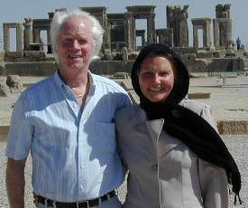
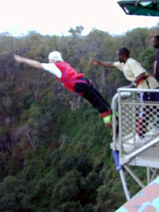

Rusty is a former astronaut of the Apollo Project. He was on board of Apollo 9 and did space walking, among other things. We met when he was in Iran with a group of American scientists for the occasion of the 1999 Solar eclipse.
He is building a web site of his own.

Rusty and his wife Nancy. Persepolis, Aug. 1999.

Rusty did this bungee jumping at the Victoria Falls. Summer 2000.